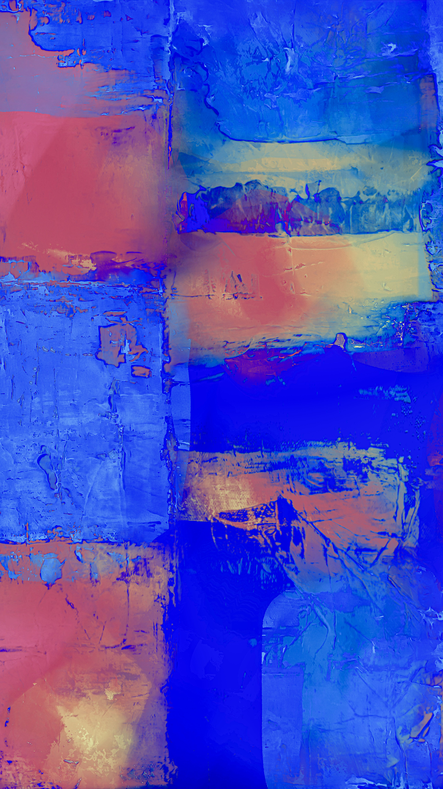
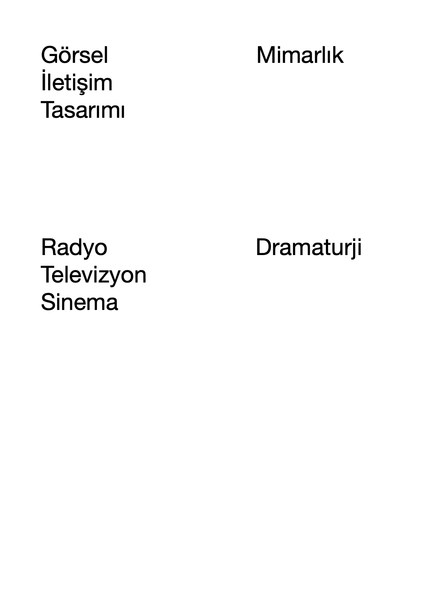

Görsel İletişim Tasarımı Lisans Programı 2022-2023 akademik yılında ilk kez öğrenci alacaktır. Bölümümüze merkezi sınav sistemi (sözel puanı) ile yerleştirme yapılmaktadır.
Görsel iletişim tasarımının kavram, kuram ve tekniğini; tasarım kültüründen beslenerek yaratıcı düşüncenin bakış açısı ile becerilerini özgün bir şekilde ortaya koyabilecek, düşünsel, sanatsal ve teknik bilgiye sahip tasarımcılar yetiştirmektir.
Akademik alanda ve görsel iletişim tasarımı sektöründe (yayınevleri, grafik-animasyon ve multimedya yapım şirketleri, reklam ve grafik tasarım ajansları, firmaların tasarım merkezleri, vb. gibi) yer alacak sanatsal ve akademik düzeyde donanımlı tasarımcılar yetiştirmek; örnek, kalitede öncü bir kurum olarak tanınmak.
Adres:Düzce Üniversitesi Sanat, Tasarım ve Mimarlık Fakültesi Üskübü Yerleşkesi Çiftepınarlar Mh. Türbe Sk. No:7/1 Konuralp/DÜZCE
İletişim:0 (380) 5421264
İletişim:0 (380) 5421297
E-posta:stf@duzce.edu.tr
Düzce Üniversitesi-Görsel İletişim Tasarımı Bölümü